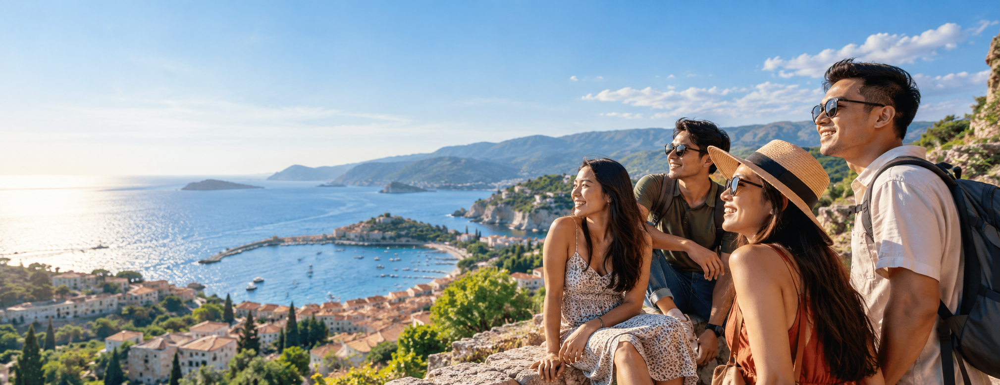
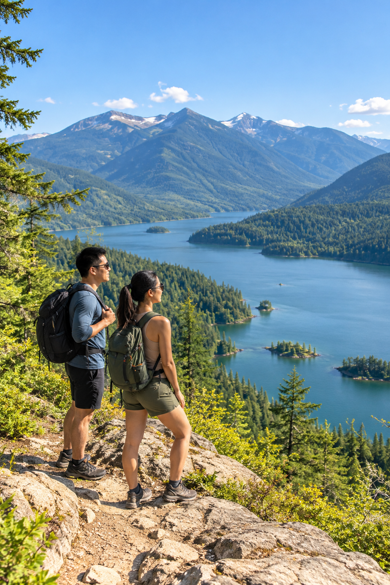
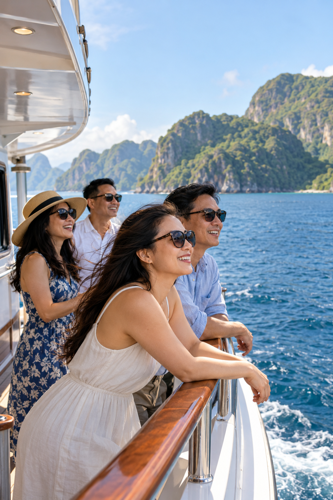
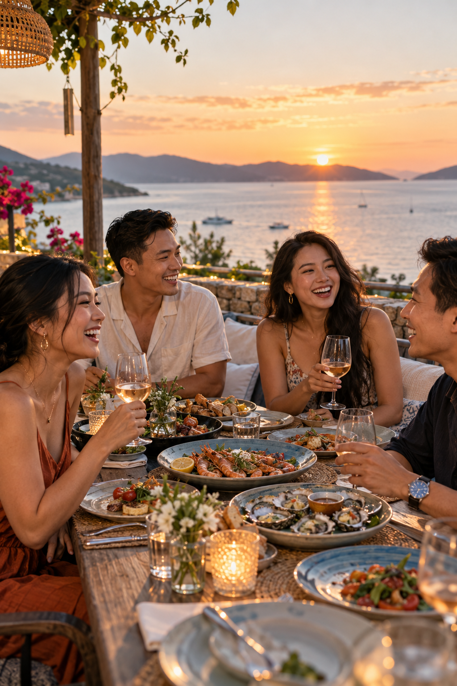

01 · ARRIVE
The first walk
Soon after arriving, a walk through new streets invites the group to notice the colors, sounds and small surprises around them.
VMMTRAVEL
A new place, a shared view, time with people who matter. VMMTRAVEL gives travel and tours a home within the VLINKPAY ecosystem, with a focus on making the journey easier to discover and understand.
Follow the story ↓Explore the VMMTRAVEL site ↗
A trip starts before anyone leaves home. People compare places, plans and the time they can share. The details matter because travel should feel inviting from the first decision, not only after arrival.
VMMTRAVEL's direction is to bring travel and tours into a clearer booking experience. Its story is about making room for discovery while keeping the choices around a trip understandable for the people taking it.
Imagine a trip unfolding one moment at a time. The best memories grow from where we go, how we rest and who shares the day.
Soon after arriving, a walk through new streets invites the group to notice the colors, sounds and small surprises around them.

A hotel check-in gives everyone a moment to set down their bags, settle in and look forward to the day ahead.

Beyond the streets, a quiet trail and an open landscape give the journey space to breathe.

From the deck, the shoreline changes shape. The group shares the breeze, the view and a new story to remember.

As the light softens, a meal brings everyone together to laugh about what they saw and plan what comes next.
Illustrative travel imagery and experience themes, not announced routes, bookable tours or a published program.
A video from the official VMMTRAVEL channel. Featured journeys are archival footage, not current tour listings.
Explore more VMMTRAVEL videos ↗ ✈️ KHÁM PHÁ THẾ GIỚI CÙNG VMMTRAVEL 🌎
✈️ KHÁM PHÁ THẾ GIỚI CÙNG VMMTRAVEL 🌎Make the path from an idea to a journey easier to follow.
Start with the place and experience people hope to find.
Bring tour and travel options into a clearer decision.
Turn a plan into time spent with people and places that matter.
VLINKPAY is the parent of separate brands with different areas of focus. VMMTRAVEL is the travel and tours chapter; NEXORA TOUCH focuses on salon operations, TAX IQ on a tax and finance direction, and VLINKPAY FOUNDATION on community work.